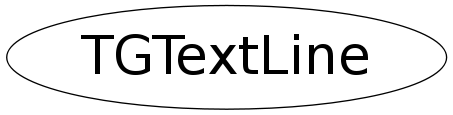

class TGTextLine
TGText A TGText is a multi line text buffer. It allows the text to be loaded from file, saved to file and edited. It is used in the TGTextEdit widget. Single line text is handled by TGTextBuffer and the TGTextEntry widget.
Function Members (Methods)
public:
| TGTextLine() | |
| TGTextLine(TGTextLine* line) | |
| TGTextLine(const char* string) | |
| virtual | ~TGTextLine() |
| static TClass* | Class() |
| void | Clear() |
| void | DelChar(ULong_t pos) |
| void | DelText(ULong_t pos, ULong_t length) |
| char | GetChar(ULong_t pos) |
| ULong_t | GetLineLength() |
| char* | GetText() const |
| char* | GetText(ULong_t pos, ULong_t length) |
| char* | GetWord(ULong_t pos) |
| void | InsChar(ULong_t pos, char character) |
| void | InsText(ULong_t pos, const char* text) |
| virtual TClass* | IsA() const |
| virtual void | ShowMembers(TMemberInspector& insp) |
| virtual void | Streamer(TBuffer& b) |
| void | StreamerNVirtual(TBuffer& b) |
protected:
| TGTextLine(const TGTextLine&) | |
| TGTextLine& | operator=(const TGTextLine&) |
Data Members
protected:
| ULong_t | fLength | lenght of line |
| TGTextLine* | fNext | next line |
| TGTextLine* | fPrev | previous line |
| char* | fString | line of text |
Class Charts
{kind=link}
{kind=link}
{kind=link}
{kind=link}

Function documentation
char * GetText(ULong_t pos, ULong_t length)
Get length characters from line starting at pos. Returns 0 in case pos and length are out of range. The returned string must be freed by the user.
char GetChar(ULong_t pos)
Get a character at the specified position from the line. Returns -1 if pos is out of range.